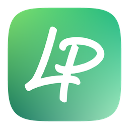
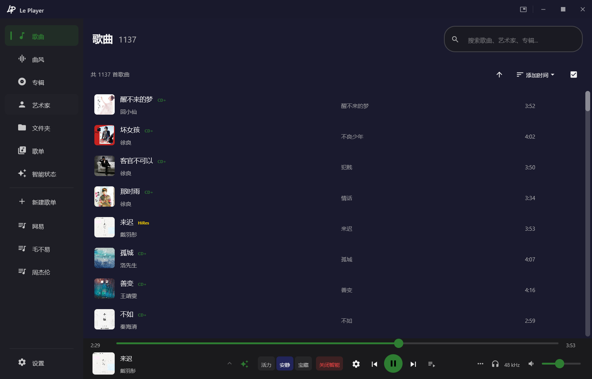
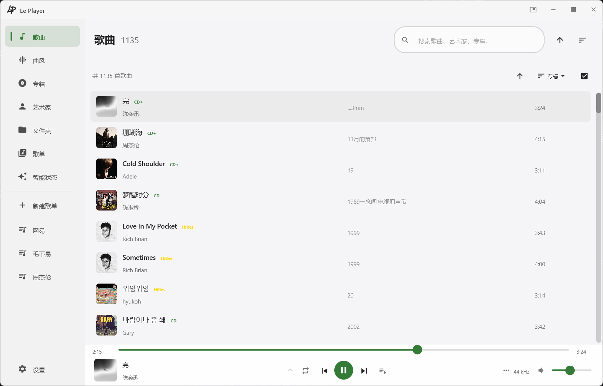
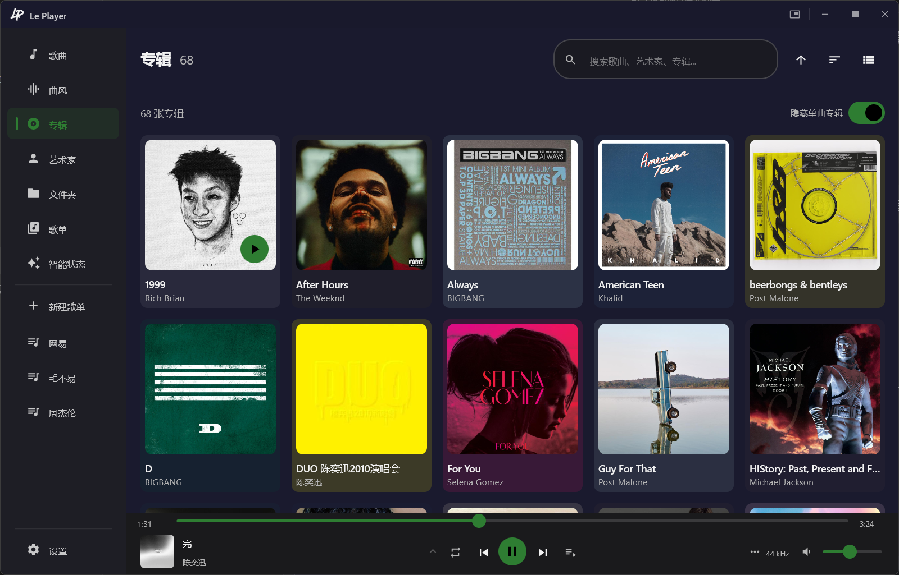
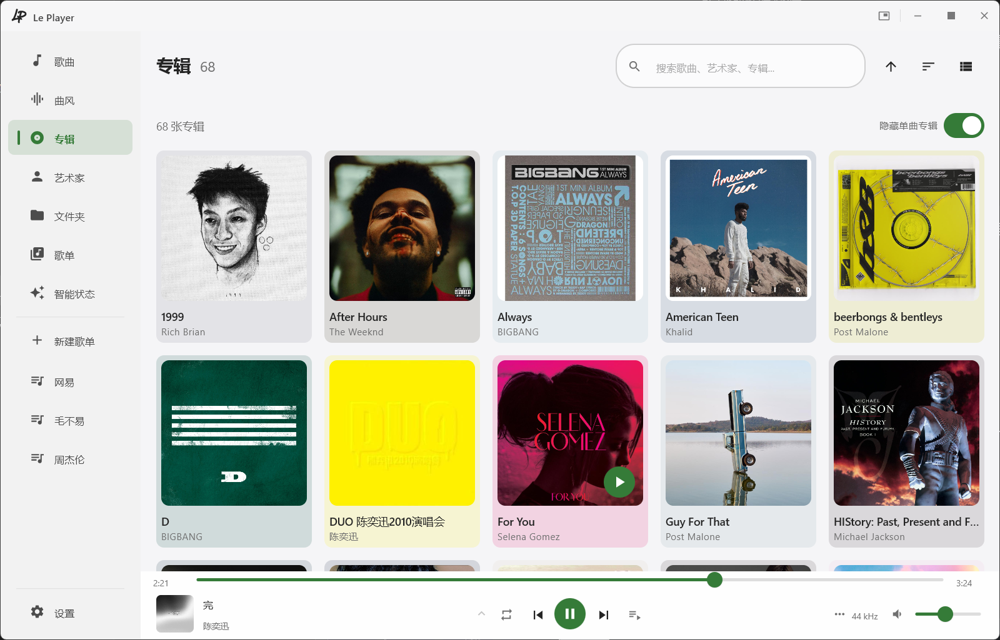
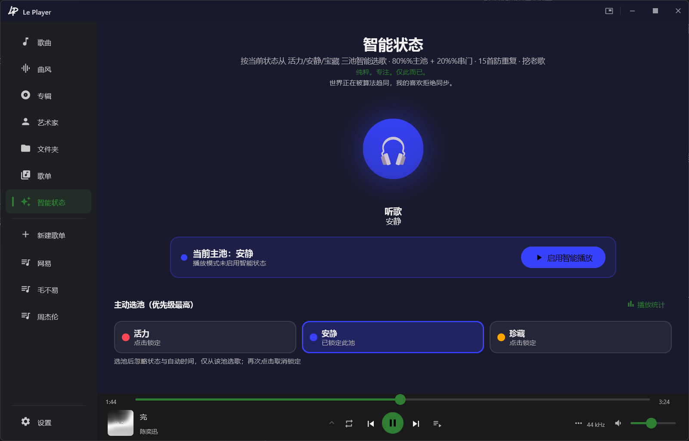
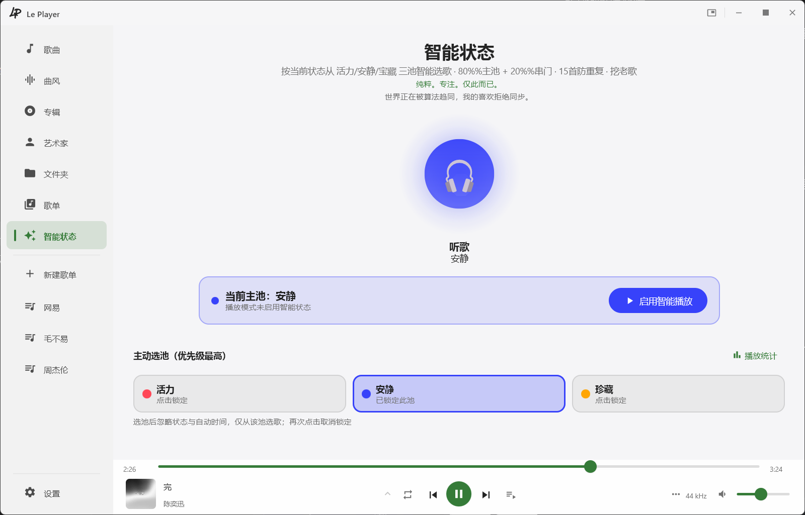

以前用流媒体，后来开始自己存歌。
世界正在被算法趋同，我的喜欢拒绝同步。
WASAPI 独占模式直通声卡，采样率自适应，源率直出零重采样损失
原生音频底层 + 环形缓冲 + 欠载淡出保护，长时间播放稳定可靠
深浅主题、动态取色、桌面歌词、迷你播放器，Compose Desktop 原生渲染
高质量重采样、严格背压控制、解码与输出解耦
深浅双主题 · 多种视图






快速上手
版本记录